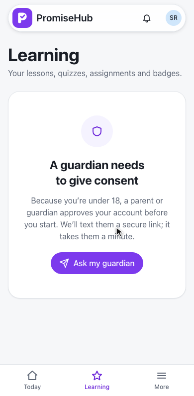
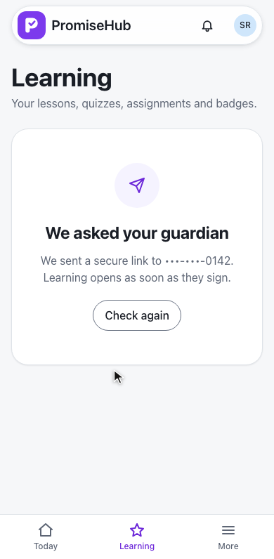
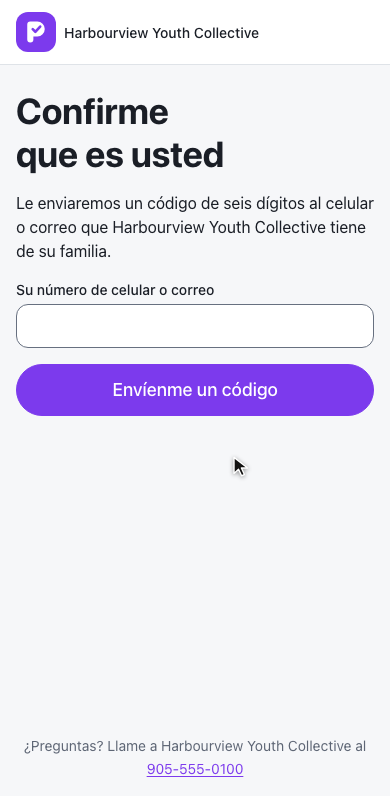
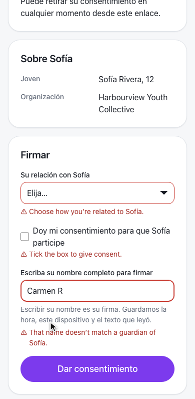
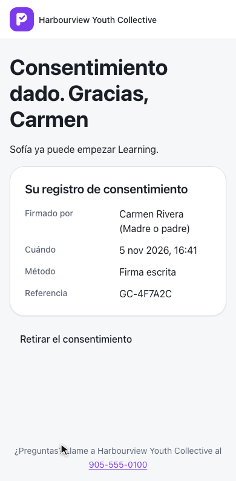
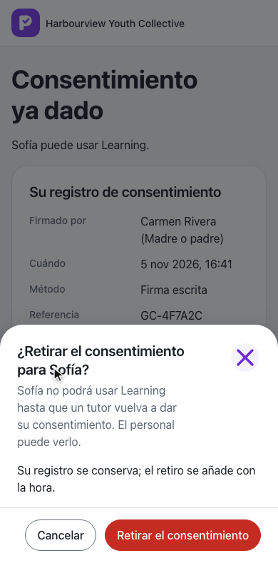
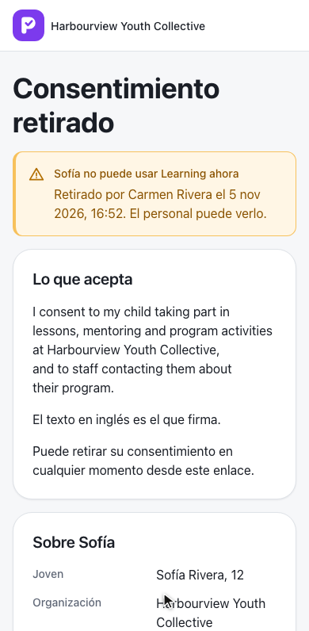
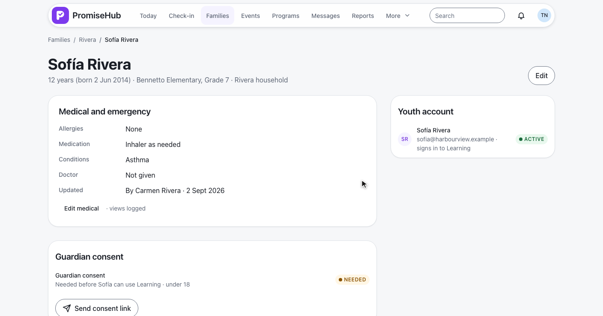
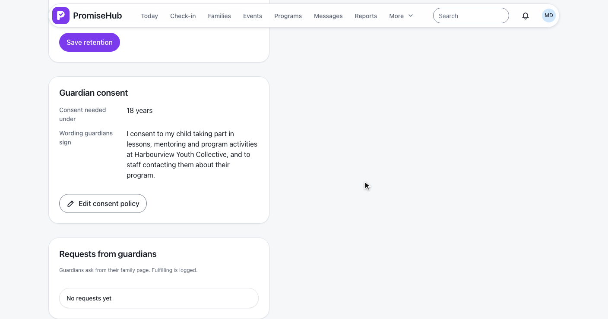

PromiseHub · Video 52
Give guardian consent for a youth
A gate on the server, a verified link for the guardian, a withdrawal that takes effect at once
A gate on the server, a verified link for the guardian, a withdrawal that takes effect at once
GET /learning/lessons → 403 consent-required; Ask my guardian → 202.


RequireGuardianConsent() · ADR 0046
Code, Spanish page, two mistakes, then signed.



| Field | Example |
|---|---|
| Signed by, relationship | Carmen Rivera, Parent |
| When, device, language | 5 Nov 2026 16:41, her phone, Spanish |
| Wording and its SHA-256 | The organization's wording as shown |
| Reference | GC-4F7A2C |
GuardianConsent · audited as Signed · a copy emailed to the signer
No staff step.
GET /children/{id}/consent, POST …/consent-request.
| Caller | Read | Send |
|---|---|---|
| Admin, program director | 200 | 202 |
| Site lead, youth worker, coordinator | 200 | 403 |
| Youth, mentor, volunteer | 403 | 403 |
| Another organization's child, or Roster off | 404 | 404 |
A CDK dialog confirms; the youth is gated at once.


13 to 19, default 18; wording 20 to 2,000 characters.
| Case | Answer |
|---|---|
| Youth under the age, no consent | 403 consent-required, every request |
| Wrong name, unticked box, no relationship | 422, nothing stored |
| Link over 30 days, or replaced | 410 |
| Withdrawal mid-session | Next request 403, record kept |
| Learning or Roster off, another organization | 404 |


Next: a new youth completes first-run onboarding